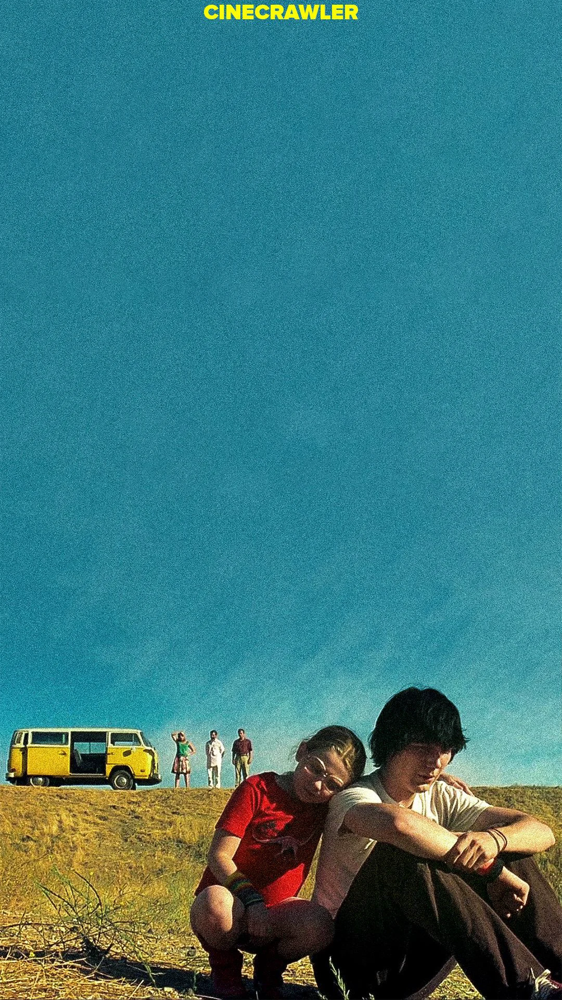
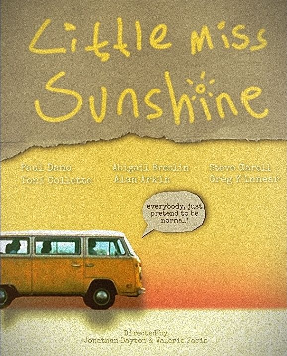

Comedy, Drama, Road Trip
2006
101 minutes
Jonathan Dayton & Valerie Faris
Little Miss Sunshine follows the quirky Hoover family as they embark on a cross-country road trip in their aging Volkswagen bus to support young Olive's dream of competing in the Little Miss Sunshine beauty pageant. Along the way, each family member confronts personal struggles while discovering the importance of love, resilience, and embracing imperfection.